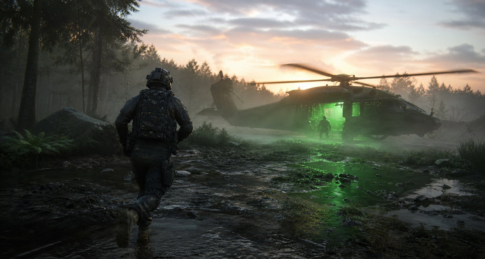

1. Les trois familles d'extracteurs
| Type | Conditions | Coût moyen |
|---|---|---|
| Vert (libre) | Ouvert en permanence ou après délai fixe | 0 K |
| Rouge (conditionnel) | Payement, sans sac, timing, dogtags, objet spécifique | 2 000–6 000 K |
| PvE / ticket (No Man's Land) | PvE uniquement, accès par ticket | Ticket |
Les conditionnels les plus utilisés
- Southern Blockade (Farm) — 2 000 K en Normal ; 6 000 K en Lockdown.
- Hunter's Path — extraction sans sac à dos. Prévoyez de looter avec une ceinture + gilet seulement.
- Valley Helipad — 2 dogtags exigées. Les kills ont donc une valeur de sortie, pas seulement de gloire.
- Backpack-off — garder vos objets dans rig/poche sécurisée uniquement.
2. Chrono & activation
Les extracteurs conditionnels s'activent 10 minutes après le début du raid en Normal. En Lockdown, le coût double mais la fenêtre de compétition se resserre. La sirène finale est un aimant à tiers-partis : tout le monde converge vers les sorties à la fin.
Les 3 minutes fatales
Entre T-3:00 et T-0:00, chaque extracteur est pré-visé par des survivants expérimentés. Si vous êtes en fin de raid sans être sûr de votre sortie : ne poussez pas. Revenez à un extracteur vert connu et attendez l'ouverture.
3. Stratégie d'extraction : le protocole complet
- Identifiez 2 extracteurs dès le spawn : le vôtre et un plan B. Jamais un seul.
- Écoutez avant d'approcher : 10–15 secondes d'écoute immobile à 50 m. Sons de pas, reload, radio = reportez.
- Approchez par l'arrière ou le flan, jamais par l'axe face.
- Pré-réaglez votre inventaire : triez sur place pour déposer le loot lent. 20 secondes gagnées = duel gagné.
- LMG / bouclier humain : si vous êtes en duo avec du loot épique, l'un couvre, l'autre loot et extrait.
- Laissez un leurre : un sac vide visible peut détourner un opportuniste de la vraie sortie.
4. Extracteurs par carte (S7)
| Carte | Extractions | Profil |
|---|---|---|
| Farm | 14 | Grande variété, Heavy Infected Zone (S7) |
| Valley | 12 | Backpack-off fréquents, Infected Zone |
| Northridge | 10 | Longue portée, extracteurs éloignés |
| Armory | 9 | CQB, peu d'extracteurs — connaissez-les par cœur |
| TV Station | 11 | Cadence folle, sorties mixtes |
| Airport | 13 | Heavy Infected + Zombie Endless (S7) |
| No Man's Land | 8 | PvE ticket, entraînement sans risque |
Les listes détaillées extraction par extraction sont disponibles sur les pages dédiées : Farm, Valley, Airport.
Ce que vous perdez vraiment quand vous mourez
C'est la question que tout le monde pose et que presque personne ne pose correctement. La réponse courte : il n'y a pas d'assurance dans ABI Infinite. Ce que vous perdez est perdu — sauf ce qui est placé dans un emplacement protégé, ou ce qu'un coéquipier vous rapporte. Officiel
| Emplacement | Ce qui survit | Condition |
|---|---|---|
| Emplacement clé | Vos cartes d'accès | Toujours protégé, même si vous mourez |
| Secure Pouch (1 case) | 1 objet | Seulement dans les modes qui le proposent |
| Secure Case (grille payante) | 6 à 9 cases | Contenu de la grille uniquement |
| Corps de l'adversaire | Tout son kit | Accessible uniquement si vous survivez assez longtemps |
| Recours des coéquipiers | Votre stuff, renvoyé par mail | Un coéquipier doit survivre et sortir |
| Rig et sac | Rien | Tout ce qui n'est pas protégé est perdu définitivement |
L'erreur qui coûte le plus cher
Beaucoup de guides — y compris d'anciennes versions de celui-ci — parlent d'une « assurance » qui rendrait l'équipement couvert. Cette mécanique n'existe pas dans le jeu actuel : le wiki officiel est explicite, « insurance does not exist, what you lose is gone unless recovered manually ». Tout ce que vous mettiez en dehors d'un emplacement protégé est perdu sans contrepartie. Documenté
La Secure Case : ce que les Bonds achètent vraiment
La Secure Case est le seul « achat de survie » du jeu. C'est un petit conteneur à grille que vous louez en Bonds, et qui conserve son contenu même si vous mourez. Ce que vous n'y mettez pas ne vous protège pas. Communautaire
| Format | Cases | Coût | À retenir |
|---|---|---|---|
| 2×3 | 6 | 400 Bonds | Le format d'entrée, suffisant pour un lot de documents et d'injecteurs |
| 3×2 (Composite Case) | 6 | 1 000 Bonds / 30 jours | Abonnement à renouveler : l'abonnement expire même si vous ne mourez jamais |
| 3×3 | 9 | 800 Bonds | Persiste au wipe, mais ne vaut que si vous le remplissez |
- La Case elle-même ne se perd pas à la mort — seule la subscription expire, au bout de sa durée.
- Règle de la Saison 6 : les munitions rouges ne peuvent pas être placées dans une Secure Case.
- Depuis la Saison 5, une carte d'essai 3×3 gratuite est distribuée en récompense de fin de saison — vérifiez votre boîte aux lettres.
- Ce qui mérite la Case : documents, objets de quête, injecteurs, clés si vous n'avez pas le Key Chain, et le loot compact à forte valeur. Ce qui ne la mérite pas : les munitions en vrac et l'armure que vous porterez de toute façon.
- Le seuil de rentabilité est arithmétique, pas émotionnel : six cases bien pleines battent neuf cases vides. Comptez vos morts réels sur dix raids avant d'acheter.
Les trois voies gratuites vers une Secure Case 3×3
La Secure Case est le seul « achat de survie » du jeu — mais il existe trois chemins qui ne coûtent rien, et l'éditeur les a documentés lui-même. LesIgnorer, c'est payer une location pour un objet que le jeu vous donne.
| Voie | Ce que dit l'éditeur | Quand |
|---|---|---|
| Les missions de saison | « Free Largest Secure Case: Get 3×3 Titanium Cases by completing the new season missions. » | Depuis la Saison 4, reproduit chaque saison |
| La boîte aux lettres du jeu | « Log in and claim the free 3×3 Titanium Secure Case via in-game email. » | Récompense de fin de Saison 5 |
| Les cartes d'essai 3×3 | Carte d'essai 3×3 Secure Case distribuée avec 4 500 Bonds, la plus grosse dotation Bonds de l'histoire du jeu | 1er anniversaire, 17 avril 2026 |
| Lesdistribution de fin d'année | « We're giving every Operator a free 3×3 Secure Case… delivered via in-game mail. » | 21 décembre 2025 |
La routine de fin de saison qui vaut de l'argent. À chaque bascule de saison, deux choses tombent : la Titanium 3×3 par les missions, et une carte d'essai par la messagerie. Ces récompenses sont limitées à leur fenêtre de réclamation — une carte non réclamée expire. L'astuce triviale mais vraie : le 16 septembre, à la bascule vers Utopia, votre boîte aux lettres contenait une Secure Case 3×3 gratuite. Officiel
Le prix en Bonds : ce que personne ne peut confirmer. Les chiffres publiés se contredisent, et il faut le dire franchement plutôt que d'imprimer un nombre faux. Un relevé de monétisation de 2024 situait une Case autour de 2 600 Bonds, soit environ 25 $ pour 30 jours. D'autres sources décrivaient une structure à paliers, avec un petit format autour de 500 Bonds et un grand autour de 1 000. Les sites de rechargement de currency publient tout et n'importe quoi entre 400 et 2 600 Bonds, ce qui est du bruit, pas de la donnée. Ce qui n'est pas contesté, c'est le modèle : Bonds, par format, renouvelé tous les 30 jours, et non performance — la Case cesse de protéger votre stuff quand l'abonnement expire, sans que vous ayez à mourir. La seule source fiable reste l'écran de la boutique dans le jeu. Documenté
La règle des munitions rouges, et sa source exacte. Les notes de balance officielles de la Saison 6 énoncent une restriction nette : « Red ammo cannot be placed in secure cases. » Elle n'a jamais été levée depuis. Concrètement, les cartouches de haut tier que vous racks — votre stock de munitions rouges — disparaissent à la mort même si vous les avez mises dans la Case. La Case protège vos clés, votre currency et vos objets de quête ; elle ne protège pas vos munitions de haut tier. Cela ne contredit pas le plafond de valeur d'équipement : ce sont deux règles distinctes qui s'empilent, l'une limitant ce que vous entrez avec, l'autre ce que vous pouvez protéger. Officiel
Le troisième filet de sécurité, et le moins connu. Deux filets sont généralement cités : la Case, et le coéquipier qui sort vivant avec votre stuff et vous le renvoie par la messagerie du jeu. Il en existe un troisième : le Supplies Retrieval Device, qui vous est expédié après le raid. Il faut connaître l'existence de cette option avant d'en avoir besoin — ce qui est précisément le problème des options d'urgence. Communautaire
Les boîtes de récupération : l'espace que vous ne payez pas
Quand vous récupérez l'équipement d'un adversaire, vous n model's récupérez pas que ses objets : vous récupérez aussi la boîte de récupération qui l'accompagne. Elle fonctionne comme une case supplémentaire de conteneur sécurisé, et elle est gratuite. Concrètement, l'un des avis de joueurs les plus utiles est que ce mécanisme offre l'équivalent de six cases de Case en plus, ce qui n'est pas négligeable quand la Case elle-même n'en offre que six.
La règle de sécurité qui accompagne le loot. Ne foncez jamais sur un corps : l'équipe adverse observe très souvent, et la boîte de récupération est précisément ce qui déclenche l'embuscade. La séquence qui se répète dans les retours de joueurs : un angle sûr, un balayage de la zone, puis seulement le loot. L'angle se prend avant le sac, jamais l'inverse. Communautaire
La récupération par les coéquipiers : le vrai filet de sécurité
Le wiki le formule sans ambiguïté : « Teammates can retrieve and return your gear if they survive, which will be sent back to you via in-game mail. » Autrement dit, si un coéquipier sort vivant avec votre stuff, il vous le renvoie par la messagerie du jeu. C'est gratuit, et c'est souvent plus rentable qu'une Case. Documenté
Une nuance importante : les objets marqués d'un symbole orange appartiennent à vos coéquipiers — si vous extrayez avec eux, vous ne pouvez pas les garder. Officiel
Le protocole d'équipe en quatre lignes
1. Emplacement clé : vos cartes, toujours. 2. Secure Pouch : votre objet le plus cher. 3. Coéquipier vivant = stuff renvoyé par mail. 4. Rig et sac : ce que vous acceptez de perdre aujourd'hui pour ne pas avoir à choisir en pleine mort.
Le programme de compensation des tricheurs
Il existe une seule forme de « remboursement » dans le jeu, et elle est targeting les tricheurs : le programme de compensation de G.T.I. Security. Si vous êtes tué par un joueur qui reçoit ensuite un bannissement définitif, vous récupérez l'intégralité de l'équipement porté au moment de la mort — armes primaires et secondaires avec leurs attachements, casque, casque audio, gilet et protection, sac et chest rig. Le tout est renvoyé par la messagerie du jeu, généralement sous un à trois jours ouvrés. Communautaire
- Vous n'avez rien à faire. Le système vous identifie automatiquement comme victime ; un signalement n'est pas nécessaire, il est simplement encouragé.
- Cela fonctionne même si un autre joueur a déjà pillé votre corps, et même si votre coéquipier a récupéré votre stuff.
- Les objets de votre Secure Case ne sont pas concernés — ils ne sont pas perdus, ils sont conservés.
Ce que ce programme ne change pas
Il ne rend pas le jeu moins risqué : il rend le jeu plus juste. La différence entre « j'ai perdu 300 000 K à un tricheur » et « j'ai perdu 300 000 K à un bon joueur » est importante, mais elle ne réduit ni le prix de votre kit ni le nombre de morts que vous prenez.
Note de vérification : l'« assurance » n'existe pas, mais beaucoup de guides la décrivent encore
Plusieurs guides communautaires récents — guides de survie de Saison 7, guides d économie, tutos vidéo d'équipement — décrivent une « assurance » qui rembourserait l'équipement perdu à la mort, à condition qu'aucun autre joueur ne soit sorti avec un objet assuré. C'est un point de friction réel dans l'information disponible sur ce jeu, et il mérite d'être traité franchement plutôt que d'être silencieusement ignoré.
La position officielle ne laisse pas de place à l'ambiguïté. Le wiki officiel indique : « insurance does not exist, what you lose is gone unless recovered manually ». Il n'existe pas de police d'assurance, pas de prime à payer pour couvrir son kit, et donc aucun remboursement conditionnel. Tout ce que vous portez hors d'un emplacement protégé est perdu.
Alors d'où vient cette description ? Deux hypothèses, et il faut les distinguer. La première : elle décrit le jeu d'origine, Arena Breakout, où le mécanisme existait réellement et où il a été supprimé ou redéfini dans la version Infinite. La seconde : elle décrit un mécanisme qui a existé dans une version antérieure de Infinite et qui a été retiré. Aucune des deux ne justifie de la traiter comme une mécanique actuelle. Les deux hypothèses convergent vers la même conclusion pratique : ne comptez pas sur un remboursement, et ne payez pas pour une couverture qui n'existe pas.
Ce qui existe réellement, et qui joue le même rôle : le conteneur sécurisé, le coéquipier qui sort vivant et renvoie votre équipement par messagerie, le programme de compensation G.T.I. Security — qui ne concerne que les victimes de tricheurs bannis définitivement — et l'emplacement clé pour vos cartes d'accès. Ces quatre mécanismes sont décrits dans la section précédente et sont, eux, documentés.
Un dernier point de vocabulaire, qui explique une partie de la confusion : le terme « assurance » est employé en français dans deux sens différents. Il peut désigner le remboursement après une mort — ce qui n'existe pas. Il peut aussi désigner simplement l'assurance-vie d'un objet : une arme de secours, une clé qui ne se perd pas, un conteneur protégé. C'est ce second sens qui est valide, et c'est celui qu'il faut employer pour éviter de se comprendre de travers.
Le verrou « Tactical Ops locked » est le seul élément réellement nouveau que les guides communautaires apporte à ce sujet. Un objet marqué « Tactical Ops locked » ne peut pas être placé dans un conteneur protégé avant votre première extraction réussie avec lui : le symbole de boîte n'apparaît sur l'objet qu'une fois cette condition remplie. En pratique, cela signifie qu'un objet tout juste acquis ne peut pas encore être mis à l'abri. Ce n'est pas anodin pour les objets les plus chers, et cela explique certains morts sur lesquels le joueur croyait avoir tout placé en sécurité.
6. Les erreurs d'extraction les plus coûteuses
- Sprinter vers la sortie sans écouter — le bruit annonce votre arrivée.
- Looter à la 40e minute — vous perdez le raid à la 39e.
- Ignorer les conditions — arriver avec un sac à dos sur un Hunter's Path = raid perdu.
- Statuer sur l'extracteur sans vérifier le timer — une sortie fermée ne rouvre pas.
- Économiser les dogtags — elles se revendent moins cher qu'une extraction Valley Helipad ratée.
Le rituel de l'opérateur
1) Looter vite, 2) Trier au dernier couvert, 3) Écouter 15 s, 4) Contourner, 5) Extraire en marchant (pas en courant : le bruit). Faites-en une mécanique, pas une improvisation.